2.2 Electrical circuits
Current
In conducting materials, electrons are free to move and can "flow". We call this flow electrical current.
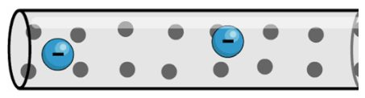
Because of a historical quirk, we use conventional current for circuit analysis: it flows from + to − (as though positive charges were moving). Electrons actually flow in the opposite direction.
Current is measured in amperes (A), with the symbol I.
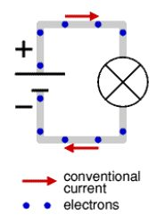
Voltage
Think of voltage as the "pressure" that drives current around the circuit. Voltage is also the amount of energy used across each component (sometimes called the voltage drop). Voltage is measured in volts (V).
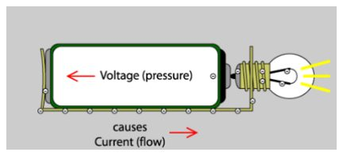
Resistance
For a given supply voltage, the current depends on the total resistance of the circuit. Resistance restricts the current, like narrowing the pipe that carries water. Resistance is measured in ohms (Ω).
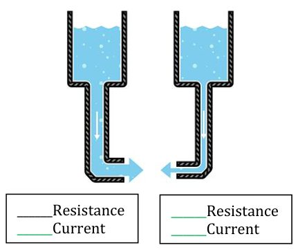
Resistance depends on the type of material, its length and its cross-sectional area.
- Materials with low resistance are called conductors.
- Materials with high resistance are called insulators.
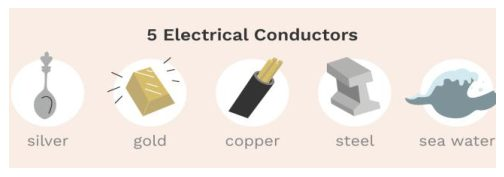
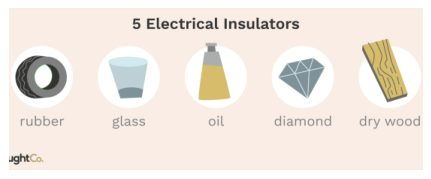
- Electric current is measured in .
- Conventional current flows from ; electrons flow the opposite way.
- Voltage is measured in .
- Resistance is measured in .
- Materials with low resistance are called .
Prac: resistance of nichrome wire
Background information: this experiment investigates the effect of the length of nichrome wire on its resistance. Electrical resistance follows the formula R = ρL / A (Lumen, 2023), which shows a linear relationship between length and resistance.
- R = resistance (Ω); L = length (m); A = cross-sectional area (m2); ρ = resistivity, a property of the material (Ω m).
- Nichrome (a nickel–chrome alloy) has a relatively high resistance. The cross-sectional area and resistivity stay constant.
Research question: What is the effect of the length of nichrome wire on its resistance?
Hypothesis: If the length (L) of a sample of nichrome wire is increased, the resistance (R) will increase in a linear relationship, according to R = ρL / A.
Variables:
- IV: length (L) in metres: 1, 2, 3 and 4 m, chosen to give an adequate range of resistance.
- DV: resistance (R) in ohms, calculated with Ohm's law from the voltage and current measured with digital meters.
- CVs: resistivity (the same nichrome wire), cross-sectional area (the same diameter), supply voltage (6 V DC), and the same measuring circuit (meters and connecting wires).
Materials: 4 nichrome wire samples (1, 2, 3, 4 m); digital ammeter; digital voltmeter; 5 connecting wires; switch; DC supply set to 6 V.
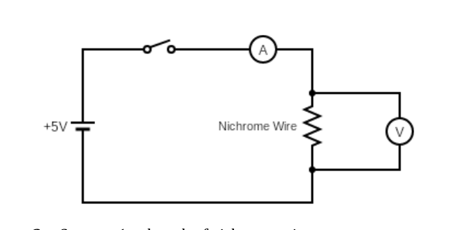
Method: construct the circuit; connect the 1 m wire, switch on and record the voltage and current; repeat for 2, 3 and 4 m; do 3 trials for each length; calculate R with Ohm's law.
Risk assessment: electric shock. Make sure the meters are connected correctly, switch the power off before changing the circuit, and only use low voltages (6 V).
Complete the processing and analysing data and evaluation sections as described in the Scientific Method topic, and submit them to DEEDS.
Ohm's law
There is an important relationship between voltage, current and resistance in a circuit: Ohm's law.
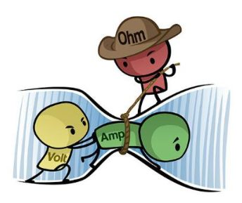
- For a fixed voltage, as the resistance increases, the current .
- As the voltage across a resistor is increased, the current .
Ohm's law calculation examples
A battery delivers 0.2 A of current to a 30 Ω resistor. Determine the voltage supplied by the battery.
V = I × R = 0.2 × 30 = 6 V.
A 10 Ω resistor is attached to a 6 V battery. Calculate the current in the resistor.
I = V ÷ R = 6 ÷ 10 = 0.6 A.
A 12 V battery is connected to a resistor and gives a current of 20 mA (0.02 A). Determine the value of the resistor.
R = V ÷ I = 12 ÷ 0.02 = 600 Ω.
Determine the current in the resistor in this circuit (10 V supply, 1.5 kΩ resistor). Give your answer in mA.
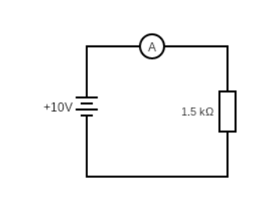
1.5 kΩ = 1500 Ω. I = V ÷ R = 10 ÷ 1500 = 0.00667 A = 6.7 mA.
Prac: Ohm's law challenge
Aim: to use Ohm's law to find the resistance of an unknown resistor.
Materials: unknown resistor (A, B, C or D), DC power supply (2–12 V), ammeter, voltmeter, connecting wires.
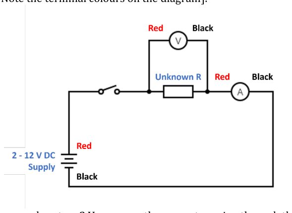
- Set up the circuit as shown. The ammeter is connected in series; the voltmeter is connected in parallel (note the terminal colours).
- Starting with the supply on 2 V, measure the current through the resistor and the voltage across it.
- Increase the voltage in steps up to 12 V, recording each voltage–current pair in a table.
- Plot a graph of current (x-axis) against voltage (y-axis) and draw a line of best fit.
- Calculate the gradient of the line (rise ÷ run). Since R = V ÷ I, this is an estimate of the resistance.
Resistors that have a constant resistance regardless of the applied voltage are called ohmic conductors; otherwise they are non-ohmic. What type of conductor is a light globe? Explain.
A light globe is non-ohmic. As the voltage increases, the filament gets hotter, and its resistance increases, so the V–I graph is a curve rather than a straight line.
Circuit symbols
International standards for drawing circuits make it easier to communicate clearly with other scientists and engineers.
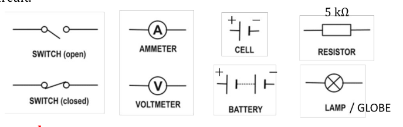
- Ammeters measure current. They are placed in the circuit (in series).
- Voltmeters measure the difference in voltage between two points, so they are placed across a component (in parallel).
2.3 Electrical power
Power is observed in a number of ways, including the brightness of a globe, the speed of a motor, and the heat of a resistor.
A wind turbine generates 2.3 A of current at 16 V. Calculate the electrical power generated.
P = V × I = 16 × 2.3 = 36.8 W.
A 12 V supply is applied to a 60 Ω resistor, giving a current of 0.2 A. Calculate the power dissipated as heat by the resistor.
P = V × I = 12 × 0.2 = 2.4 W.
Determine the current drawn by a 1500 W toaster operating on a 230 V supply.
I = P ÷ V = 1500 ÷ 230 = 6.5 A.
Section 2.2: Key summary questions
In a simple circuit with a battery and a globe, in which directions do the current (I) and electron flow (e−) go?
Conventional current flows out of the positive (+) terminal, around the circuit, and into the negative terminal. Electrons flow the opposite way, out of the negative (−) terminal and back to the positive terminal.
| Quantity | Formula symbol | Unit symbol | Name of unit |
|---|---|---|---|
| Current | amperes | ||
| Voltage | V | ||
| Resistance | Ω |
| Material | Conductor or insulator | Resistance |
|---|---|---|
| Gold | ||
| Plastic | ||
| Dry wood | ||
| Copper | ||
| Glass |
A student measures 0.4 A through a globe when she applies 12 V. Determine the resistance.
R = V ÷ I = 12 ÷ 0.4 = 30 Ω.
Calculate the expected current in a circuit with a total resistance of 25 Ω when a 15 V supply is used.
I = V ÷ R = 15 ÷ 25 = 0.6 A.
Determine the voltage drop across a 180 Ω resistor carrying 0.3 A.
V = I × R = 0.3 × 180 = 54 V.
Determine the power (in watts) used by an oven that draws 8 A and operates at 230 V.
P = V × I = 230 × 8 = 1840 W.
Calculate the current (in amps) generated by a 15 kW (15 000 W) turbine operating at 400 V.
I = P ÷ V = 15 000 ÷ 400 = 37.5 A.
Calculate the voltage supplied to an LED operating at 90 mW (0.090 W) with a current of 50 mA (0.05 A).
V = P ÷ I = 0.090 ÷ 0.05 = 1.8 V.
Describe how you would draw a circuit with a 5 V battery connected to a 4.7 kΩ resistor and a globe, with a switch, an ammeter measuring the circuit current and a voltmeter measuring the voltage across the resistor. The battery should be oriented so conventional current flows anticlockwise.
Draw one loop containing the battery, switch, 4.7 kΩ resistor, globe and ammeter, all in series. Draw the voltmeter on a separate small loop connected across (in parallel with) the resistor only. Turn the battery so its positive (long) terminal pushes current around the loop anticlockwise.
Determine the resistance of the unknown resistor in this circuit (12 V supply, 0.15 A).
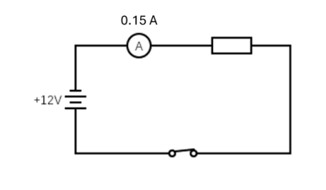
R = V ÷ I = 12 ÷ 0.15 = 80 Ω.
Determine the current in this circuit (24 V supply, 21 kΩ resistor). Give your answer in milliamps.
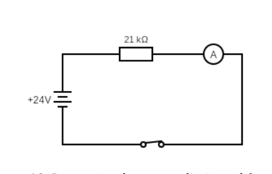
I = V ÷ R = 24 ÷ 21 000 = 0.00114 A = 1.14 mA.
Determine the power used by the lamp in this circuit (6 V supply, 8 A).
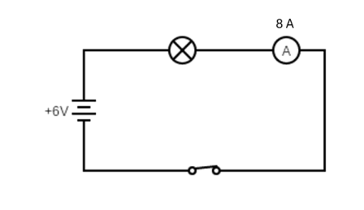
P = V × I = 6 × 8 = 48 W.